Trophy Room

| TROPHY | SEASON | DID YOU KNOW? | |
|---|---|---|---|
| 13× PREMIER LEAGUE |
1992/93, 1993,94, 1995/96, 1996/97, 1998/99, 1999/00, 2000/01, 2002/03, 2006/07, 2007/08, 2008/09, 2010,11, 2012/13 | The premier league is the English top flight division, founded in the season 1992/93, the competition has been won by Man Utd a record 13 times. | 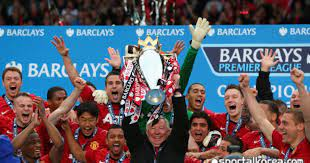 |
| 7× FIRST DIVISION |
1907/08, 1910/11, 1951/52, 1955/56, 1956/57, 1964/65, 1966/67 | Before the premier league was established, the English top flight division was known as division 1. | 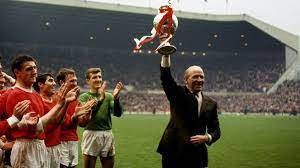 |
| 12× FA CUP |
1908/09, 1947/48, 1962/63, 1976/77, 1982/83, 1984/85, 1989/90, 1993/94, 1995/96, 1998/99, 2003/04, 2015/16 | The fa cup is competed annually, by teams in the English domestic leagues, it is also the oldest national football competition in the world, with the the first match taking place way back in 1871!!!! | 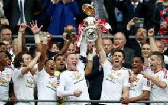 |
| 5× ENGLISH LEAGUE CUP |
1991/92, 2005/06, 2008/09, 2009/10, 2016/17 | Founded in the year 1960 the English league cup is a annual cup competition, open to any teams within the top 4 leagues in England | 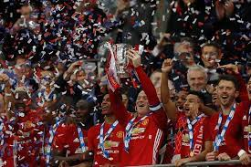 |
| 3× EUROPEAN CUP/CHAMPIONS LEAGUE |
1967/68, 1998/99, 2007/08 | Winning the champions league, formerly known as the European cup is the pinnacle for any team or player, it is contested by top level European clubs every year | 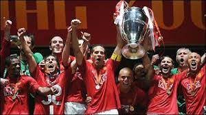 |
| 1× FIFA CLUB WORLD CUP |
2008/09 | Manchester United became the first British club to win the club World Cup on 21 December 2008 when they beat LDU Quito by a goal to nil | 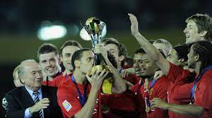 |
| 1× EUROPA LEAGUE |
2016/17 | Manchester United completed the set of major honours available to European clubs when they triumphed in the Europa League final. | 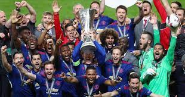 |
| 1× INTERCONTINENTAL CUP |
1999/00 | This competition was full of controversy, with allegations such as pitched battle, corruption claims and rule bending. The competition ended in 2004 and merged with the Fifa club World Cup. | 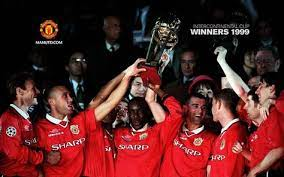 |
| 1× UEFA CUP WINNERS' CUP |
1990/91 | The UEFA cup winners’ cup ran for 39 seasons, it was considered the 2nd most prestigious club competition after the champions league. | 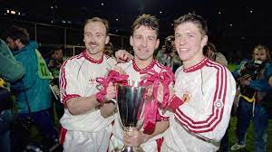 |
| 1× UEFA SUPERCUP |
1991/92 | The UEFA super is contested between the winners of the Europa league and the champions league, the match takes place every year just before the start of the new season | 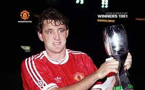 |
| 21× CHARITY/COMMUNITY SHIELD |
1908/09, 1911/12, 1952/53, 1956/57, 1957/58, 1965/66, 1967/68, 1977/78, 1983/84, 1990/91, 1993/94, 1994/95, 1996/97, 1997/98, 2003/04, 2007/08, 2008/09, 2010/11, 2011/12, 2013/14, 2016/17 | Contested annually by the winners of the fa cup and the premier league | 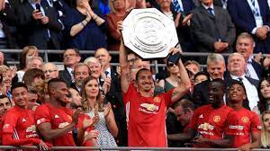 |